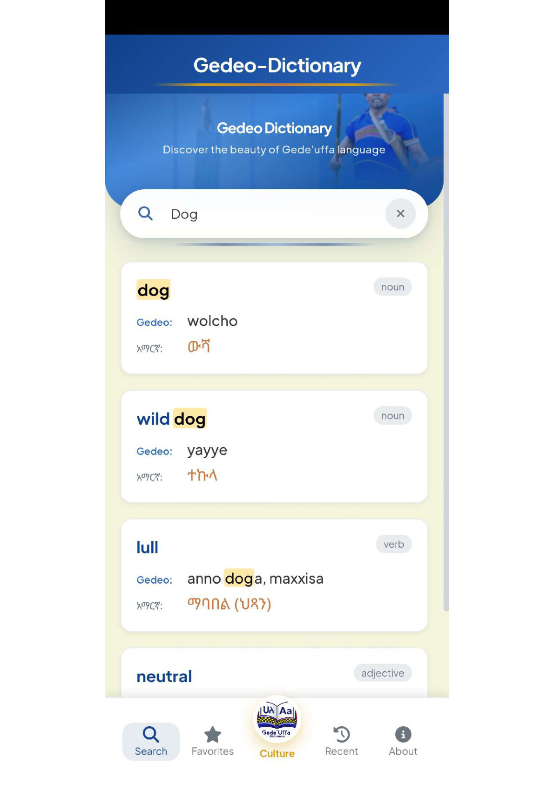
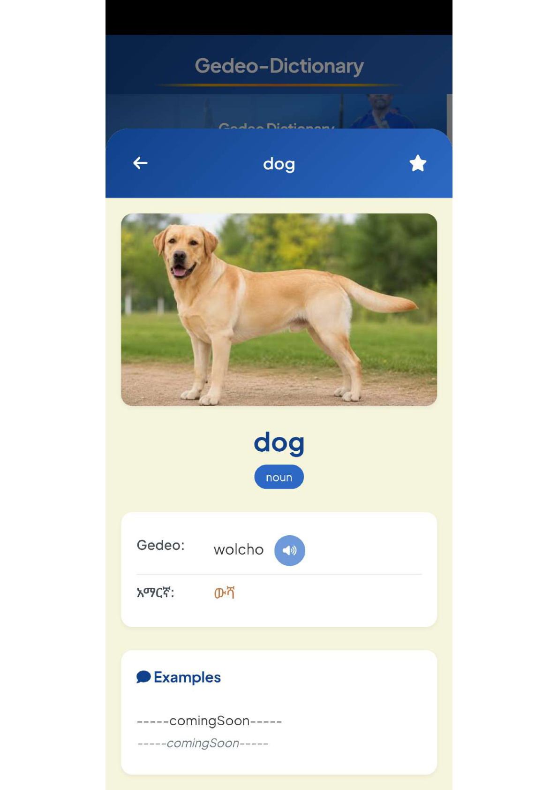
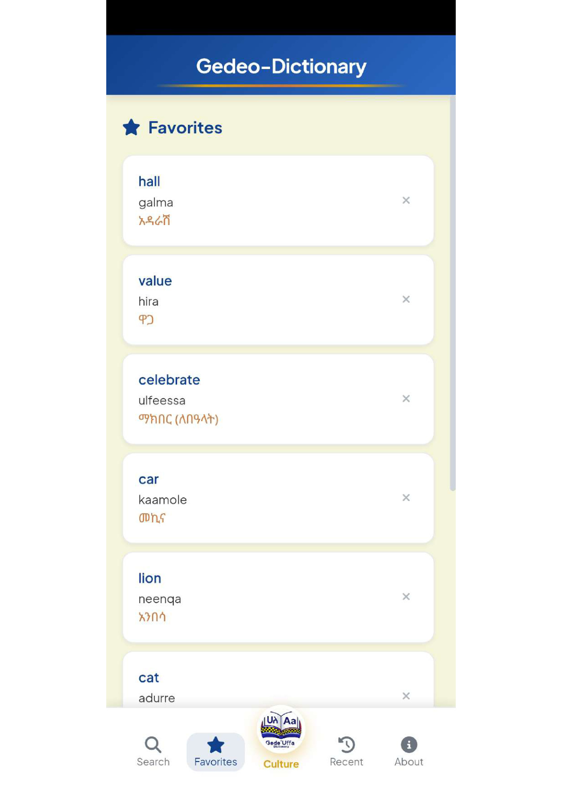
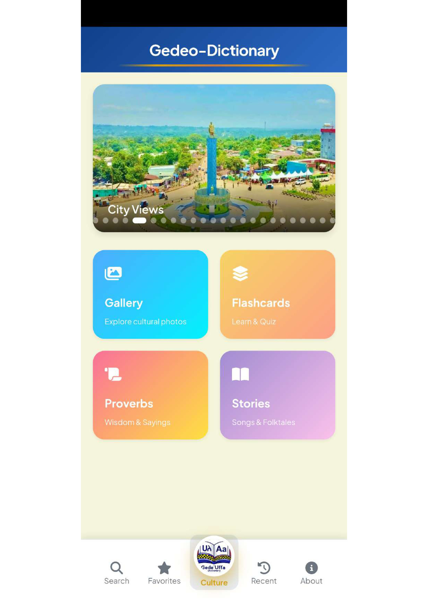
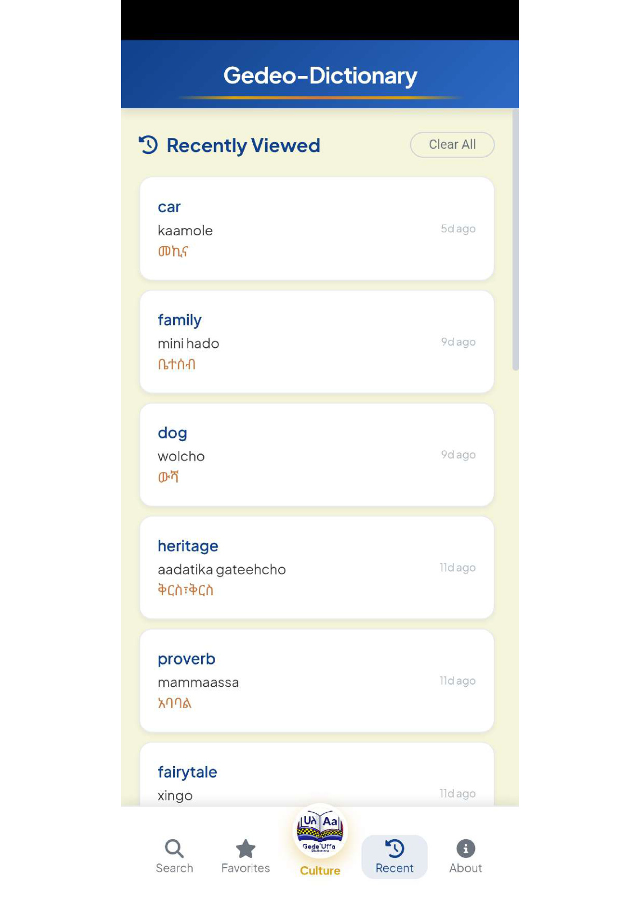
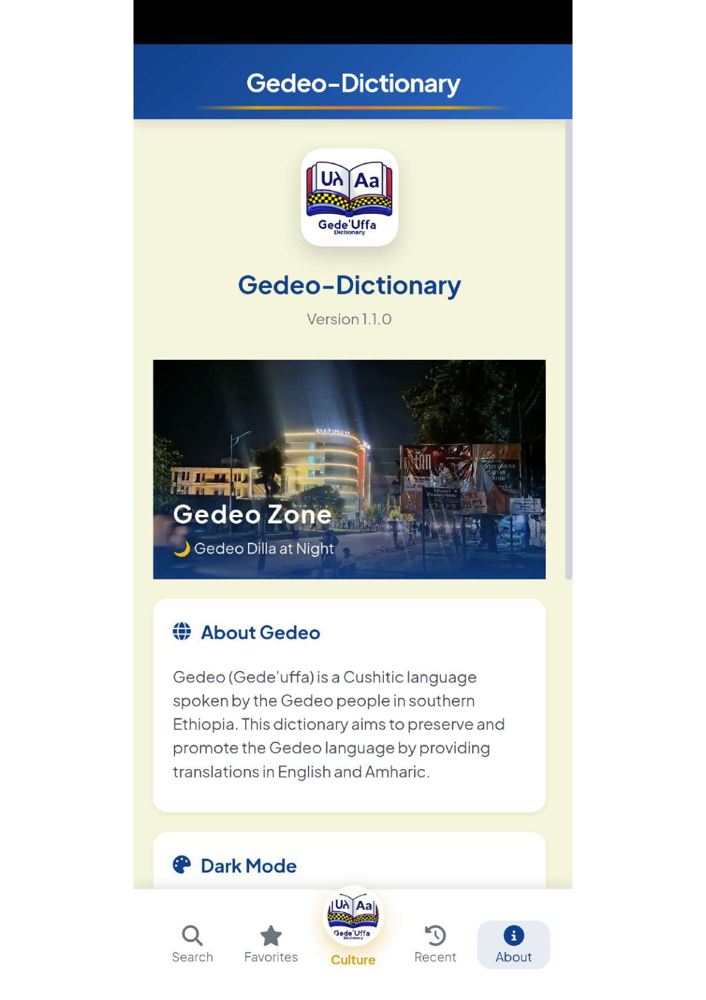

Dictionary search
Search words in English, Gedeo or Amharic and explore matching translations.
Gede'Uffa Dictionary brings Gedeo, Amharic and English together in one Android learning experience—supporting word discovery while celebrating Gedeo language and culture.
A digital dictionary and cultural learning application connecting Gedeo, English and Amharic.
Gede’Uffa Dictionary is a digital dictionary and cultural learning application developed to make the Gedeo language (Gede’Uffa) easier to search, learn, understand, and explore. The application brings Gede’Uffa, English, and Amharic together in one convenient mobile platform, allowing users to search for words, discover translations, explore vocabulary, and learn more about Gedeo language and culture.
Designed for Gedeo speakers, students, teachers, language learners, researchers, and anyone interested in Ethiopian languages and cultures, the application provides an accessible way to discover Gedeo vocabulary and cultural resources directly from a mobile device.
Whether you are a native Gedeo speaker, an English or Amharic speaker interested in learning Gede’Uffa, or simply curious about the Gedeo people and their culture, Gede’Uffa Dictionary offers a convenient place to start.
Gede’Uffa Dictionary supports searching in three languages: English, Gede’Uffa, and Amharic. Users can enter a word in any of these languages and explore matching dictionary entries.
Search results are presented in a clean and readable format. Entries can display the English word, its Gede’Uffa equivalent, Amharic translation, and part of speech, such as noun, verb, or adjective. The search functionality also helps users discover related vocabulary containing their search terms, making it easier to explore additional words and expand their vocabulary.
Gede’Uffa Dictionary goes beyond conventional word translation. It aims to provide a digital environment where users can explore Gedeo vocabulary while discovering aspects of Gedeo culture and heritage.
These features make the application useful not only as a dictionary but also as a platform for discovering and appreciating Gedeo language and culture.
With features such as Favorites and Recently Viewed, users can also conveniently return to words they frequently need.
Gedeo (Gede’Uffa) is a Cushitic language spoken by the Gedeo people in southern Ethiopia. It represents an important part of Gedeo communication, knowledge, cultural heritage, and identity.
Preserving and promoting languages through digital technology creates opportunities for wider access to language resources and supports learning, exploration, and documentation.
Gede’Uffa Dictionary was developed with the goal of making Gedeo language resources more accessible through modern mobile technology. By connecting Gede’Uffa with English and Amharic and incorporating cultural learning resources, the application brings language and culture together in one digital platform.
Our vision is to make Gedeo language resources more accessible through technology while encouraging people to learn, explore, appreciate, and preserve their linguistic and cultural heritage.
We believe that technology can create new opportunities for language learning and cultural discovery. Gede’Uffa Dictionary is one step toward making Gedeo language resources available to more people in the digital world.
Whether you are searching for a Gedeo dictionary, Gede’Uffa dictionary, Gedeo language application, Gedeo-to-English dictionary, English-to-Gedeo dictionary, Gedeo-to-Amharic dictionary, Amharic-to-Gedeo dictionary, Gedeo translation, Gede’Uffa vocabulary, Gedeo proverbs, Gedeo stories, or an Ethiopian language learning application, Gede’Uffa Dictionary brings these language and cultural resources together in one place.
Gede’Uffa Dictionary — Gedeo Language, Our Identity.
Tools for vocabulary learning, word discovery and cultural exploration.
Search words in English, Gedeo or Amharic and explore matching translations.
Listen to available word pronunciations from the word details screen.
Explore word information, parts of speech and example sections.
Save useful words so you can return to them later.
Revisit words you have looked up recently.
Explore cultural gallery content, flashcards, proverbs and stories.
Choose the dark appearance option in the app.
Learn about Gedeo language and cultural heritage through the app.
Real screenshots from Gede'Uffa Dictionary version 1.1.0.






Gede'Uffa Dictionary is also a place to celebrate Gedeo language, knowledge and culture. Explore the cultural features in the app and help more people discover Gedeo.
Download the Android app or follow the official Telegram channel for announcements and updates.
Current version shown in the supplied app screenshots: 1.1.0.